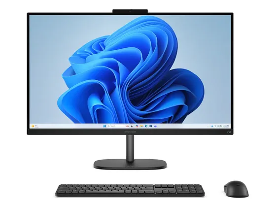
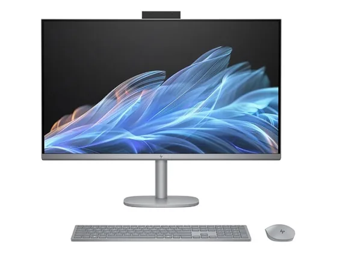
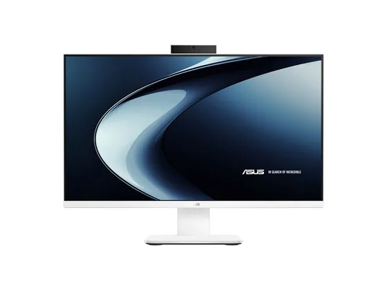

HP OmniStudio 27" : avis, tests et prix
Le verdict en une phrase. Un grand écran et un seul câble pour un budget contenu : suffisant pour la famille et la bureautique.
N° 7 sur 10 dans le top 10 ordinateurs tout-en-un.

Pour qui ?
Vous voulez un grand écran pour la famille et la bureautique, à budget contenu.
Vous utilisez plusieurs applications lourdes à la fois : 8 Go de RAM.
Le consensus de la presse
Le test recensé ne donne pas de note chiffrée : nous renvoyons vers l'article plutôt que d'inventer une note. Ces notes portent sur la gamme : configurations ou générations proches de celle vendue aujourd'hui.
Où l'acheter
La configuration peut différer d'un marchand à l'autre : vérifiez la fiche avant d'acheter. Seuls les liens Amazon sont affiliés à ce jour ; les autres sont de simples liens directs. Aucun n'influence les notes ni le classement.
Tous les tests recensés
Chaque ligne renvoie vers le test d'origine. Les notes sont converties sur 10 ; « test » signale un article sans note chiffrée. Notre méthode.
- Consumer Reportstest
Source du relevé : Test Consumer Reports.
Les alternatives pour le même usage
Tout le top 10 → Acer Aspire C 27Un tout-en-un 27 pouces à l'écran fluide et bien réglable. Les générations précédentes étaient notées autour de 4/5.
N° 6 · Le plus grand écran
Acer Aspire C 27Un tout-en-un 27 pouces à l'écran fluide et bien réglable. Les générations précédentes étaient notées autour de 4/5.
N° 6 · Le plus grand écran

HP OmniStudio X 31,5"Un grand écran 4K de 31,5 pouces, le Wi-Fi 7 et un seul câble sur le bureau : l'alternative Windows à l'iMac. N° 8 · Le minimaliste
Asus V400 AiOUn tout-en-un fin et sobre, en 24 ou 27 pouces, bien équipé en mémoire et en stockage dans ses versions Core 7.Questions fréquentes
Que pense la presse de l'ordinateur HP OmniStudio 27" ?
1 test presse recensé, sans note chiffrée. Un grand écran et un seul câble pour un budget contenu : suffisant pour la famille et la bureautique.
Quels sont les points faibles relevés par les tests ?
8 Go de RAM ; Performances modestes.
À qui s'adresse le modèle HP OmniStudio 27" ?
Vous voulez un grand écran pour la famille et la bureautique, à budget contenu. À éviter si : vous utilisez plusieurs applications lourdes à la fois : 8 Go de RAM.
Où l'acheter, et à quel prix ?
Prix relevés le 02/10/2026 : 729,99 € chez Darty ; 799 € chez Amazon. Les prix changent vite et la configuration peut différer d'un marchand à l'autre : seul le prix affiché par le marchand fait foi.